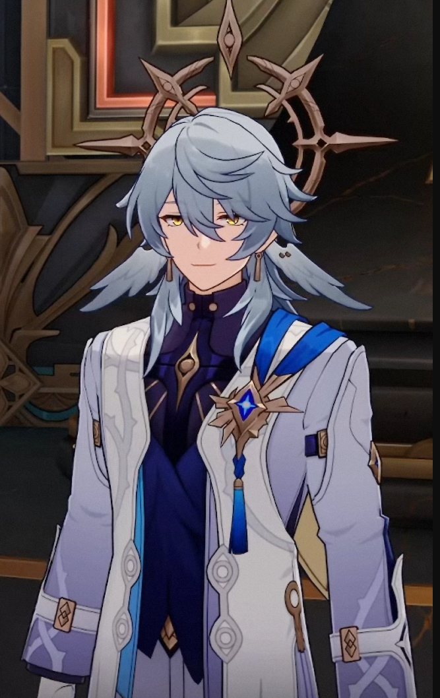

One day, after dinner, while my younger sister and I were lounging about in Mr. Gopher Wood's yard we spotted a fledgling Charmony Dove all on its own. That baby bird was tiny, it didn't even have all of its feathers, and it couldn't sing. When we found it, it was already on its last breath, having fallen into a shrub - probably abandoned by its parents. We decided to build a nest for it right there and then. However, thinking back, that winter was unusally cold, with fierce winds at night in the yard, not to mention the many poisonous bugs and wild beasts in the vicinity... it was clear that if we left the fledgling in the yard, it stood no chance of surviving until spring. So, I suggested we take it inside, place it on the shelf by the window, and asked the adults to fashion a cage for it. We decided that wehn it regained its strength enough to spread its wings, we would release it back into the wild. The tragic part - something that we never considered - was that this bird's fate had already been determined long before this moment... It's destiny was determined by out momentary whim. Now, I pass the power of choice to you all. Faced with this situation, what choice would you make? Stick to the original plan, and build a nest with soft net where the Charmony Dove fell? Or build a cage for it, and feed it, giving it the utmost care from within the warmth of a home? I eagerly await your answer.
